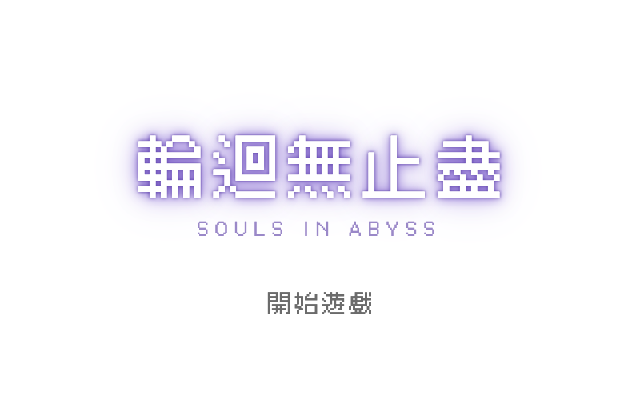
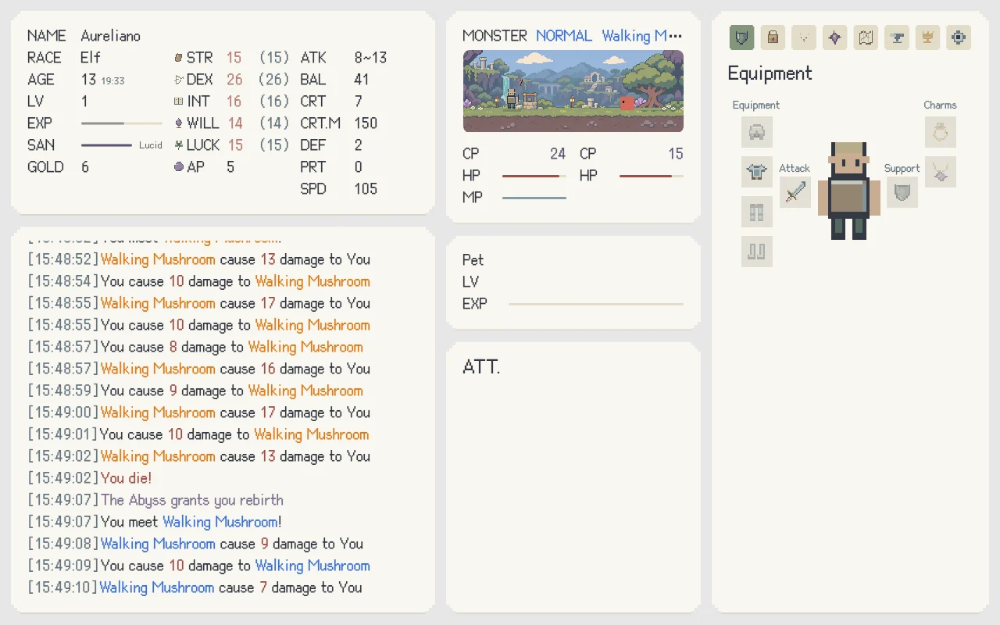
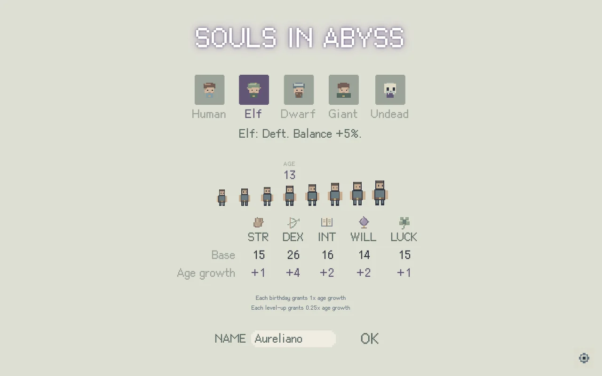
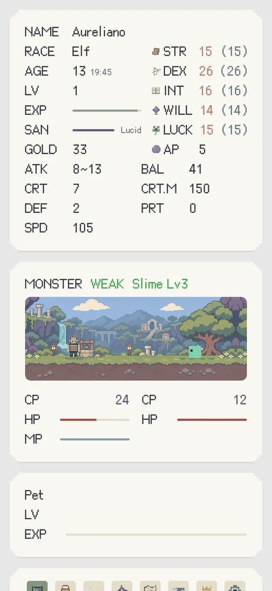

yore.tw
yore.tw
Souls in Abyss 輪迴無止盡
草原上，你醒了過來。這是你的第一生，還是又一次歸來？
You wake in a meadow. Is this your first life, or have you been here before?

開始遊戲Play now井口之下
Below the well
草原中央有一口井，沒有人敢往下看。你從這裡出發，穿過低語森林。樹根全往同一個方向生長，像是地下有什麼東西正等著它們。路還很長，你手上的武器卻不怎麼可靠。
There is a well in the middle of the meadow. No one looks down it. You set out from here, through the Whispering Wood, where every root grows downwards, as though something beneath the earth is waiting for them. The road is long. The weapon in your hand offers little reassurance.
先選擇這一生的模樣吧。人族、精靈、矮人、巨人、不死族，各有自己的力量。你可以年少就啟程，也可以晚一些再踏上旅途。日子會在戰鬥與行路之間流過，你會長大，會找到新裝備，也會遇見願意同行的夥伴。
Choose who you will be in this life: Human, Elf, Dwarf, Giant or Undead, each with their own strengths. Set out young, or wait a few years before taking the road. Days pass between battles. You grow older, find better equipment, and meet companions willing to travel beside you.
深淵記得你
The Abyss remembers
越往深處，熟悉的東西就越少。恐懼會消磨理智，眼前的寶物也更難放手。你得決定，是再往前一步，還是先回到安全的地方。武器、魔法和一路學會的本領，都會影響你能走多遠。
The deeper you go, the less familiar the world becomes. Fear wears at your sanity, and the treasures ahead grow harder to leave behind. Take another step, or return somewhere safe? Your weapon, your magic and the skills you’ve learned will help decide how far you get.
到了能夠轉生的年紀，你可以讓這一生告一段落。再醒來時，等級重新起步，但學過的技能、收集的裝備與同行的夥伴會留下。上一世的一部分力量，也會跟著你回來。
Once you’re old enough to be reborn, you may choose to bring this life to a close. When you wake again, your level begins anew, but your learned skills, collected equipment and companions remain. Some of your former strength returns with you, too.
深淵還會提出一筆交易：一份祝福，伴隨一道詛咒。你可以接受，也可以拒絕。帶著代價走下一段路，或守住自己原來的模樣，選擇留給你。
The Abyss has an offer: a gift, with a curse bound to it. Accept, or refuse. Carry its price into your next life, or keep what you are. The choice is yours.
出發前，我多說兩句
A word before you go
喵，故事先說到這裡。這是一款放置 RPG，戰鬥會自己進行，你來選擇冒險的地區、裝備和技能。剛開始不必急著深入；打不過，就回前面的地區練習，換件裝備，再試一次。
Well, that’s as far as I’ll tell the story. It’s an idle RPG: battles unfold on their own while you choose your area, equipment and skills. There’s no need to rush into the depths. If a fight is too much, return to an earlier area, find better gear, and try again.
路上記得留意自己的理智，也別忘了同行的夥伴。這趟旅程很長，能帶進下一生的東西，要一點一點累積。準備好了，就從那片草原開始吧。
Watch your sanity, and look after your companions. It’s a long journey. What you carry into the next life comes together a little at a time. When you’re ready, the meadow is waiting.
遊戲畫面
Screenshots






素材與授權
Credits
文字使用 Cubic 11 像素字型（SIL Open Font License）。部分圖示來自 game-icons.net 的 Lorc 與 Delapouite（CC BY 3.0）。
Text is set in the Cubic 11 pixel font (SIL Open Font License). Some icons come from Lorc and Delapouite at game-icons.net (CC BY 3.0).